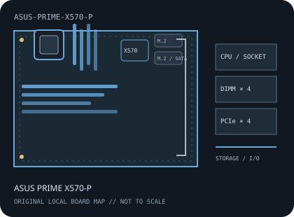

[ INDIVIDUAL COMPONENT // MOTHERBOARDS ]
ASUS PRIME X570-P
AMD Socket AM4 / AMD X570, ATX, 305 × 244 mm, 2019. This record identifies the exact model and revision scope below.

REVISION WARNING: Verify the full model name and PCB revision silkscreen before fitting a CPU, selecting memory, or applying firmware. Similar names and revisions may use different support files.
Specifications
| Catalog subcategory | AMD Socket platforms |
|---|---|
| Board / revision covered | PRIME X570-P retail model; ASUS publishes model-level specifications, so verify the PCB revision printed on the individual board. |
| Socket and chipset | AMD Socket AM4 / AMD X570 |
| Form factor | ATX, 305 × 244 mm |
| Memory | Four dual-channel DDR4 DIMM sockets, up to 128 GB in the published specification; qualified speed and module population depend on CPU and BIOS. |
| CPU and BIOS support | AM4 Ryzen processor families listed in the ASUS PRIME X570-P CPU support table, including later Ryzen 5000 models with the required BIOS. Match the exact CPU SKU to the minimum BIOS before installation. |
| Expansion | Primary CPU-connected PCIe x16-length slot and chipset-connected x16-length slot operating at up to x4, plus PCIe x1 slots; generation and lane behavior depend on processor. |
| Storage | Two M.2 sockets (CPU/chipset paths and supported PCIe/SATA modes vary by CPU) and six SATA 6 Gb/s ports. Check the manual's lane-sharing notes before populating both M.2 and SATA devices. |
| Rear I/O and connectivity | Rear HDMI for compatible APU graphics, USB Type-A ports across USB 3.2 and USB 2.0 generations, Gigabit Ethernet, multi-channel analog audio, optical S/PDIF and PS/2 combo. |
Compatibility and revision notes
AM4 socket fit alone is not proof of CPU support. Confirm the processor's minimum BIOS and memory configuration in ASUS lists. The PRIME X570-P is distinct from X570-PRO and other PRIME variants.
Socket, connector shape and chipset branding alone do not establish compatibility. Check the exact board revision, CPU support table, minimum BIOS, memory population rules, power connectors, case clearance and lane-sharing details in the cited documents.
Preservation and repair
Inspect AM4 pins, chipset-fan operation, M.2 heatsink fit and the board's six SATA connectors; retain BIOS settings and note the installed firmware before service.
For archival preservation, record PCB revision, serial/date codes, installed firmware, known faults, repairs and test conditions. Use ESD-safe handling and do not power a board with loose conductive hardware beneath it.
Manufacturer sources
- ASUS PRIME X570-P technical specificationsASUS model specification for socket, memory, slots, storage and rear I/O.
- ASUS PRIME X570-P user manual and downloadsManufacturer manual for board layout, connectors, firmware setup and installation.
- ASUS PRIME X570-P CPU supportUse the per-CPU minimum BIOS table for compatibility.
Manufacturer specifications, manuals and support lists are authoritative for the physical board; use only revision-matched firmware.